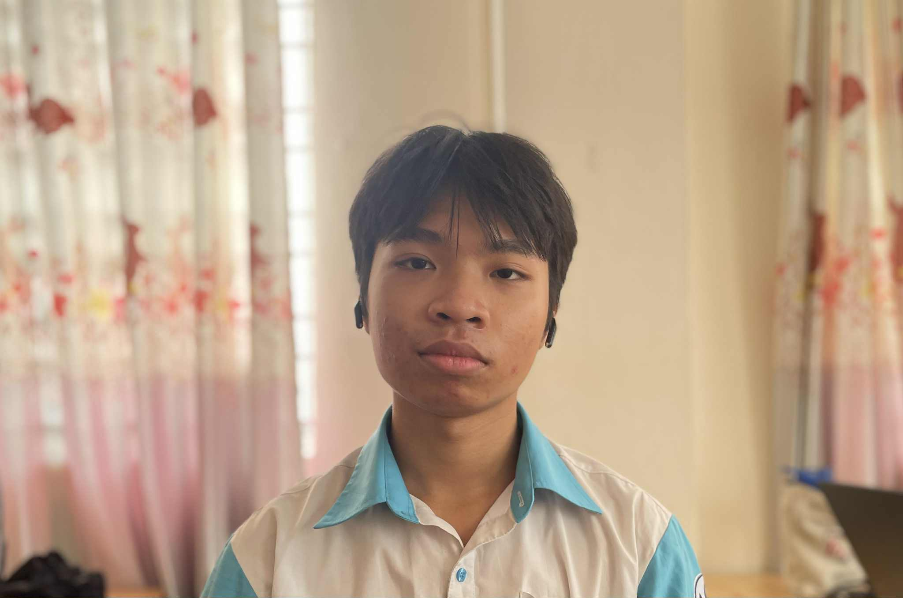

Welcome to my digital space! I'm a high school student exploring the infinite possibilities of technology, every project is a new adventure, every line of code is a new discovery.
Navigate through the sections to learn more about my journey, projects, and the technologies I work with. Let's explore the cosmos of creativity together!
About Me

My Journey Through the Digital Cosmos
Hi there! I'm a high school senior with an insatiable curiosity for the intersection of creativity and code. While most people see artificial intelligence as complex algorithms and data structures, I see it as the ultimate canvas for bringing wild ideas to life.
My journey into AI and machine learning started with a simple question: "What if I could teach a computer to dream?" That question led me down countless rabbit holes of neural networks, creative coding, and late-night experiments that somehow always end up more fascinating than I initially imagined.
When I'm not coding, you can find me wandering through the landscapes of my own imagination—a place where impossible ideas feel perfectly reasonable and every "what if" becomes a new project waiting to be born. It's in these mental adventures that I discover the creative sparks that fuel my technical work.
I believe the future of AI isn't just about making machines smarter—it's about making them more imaginative, more intuitive, and more human in the problems they help us solve. Through this portfolio, I want to show you not just what I've built, but how I think, create, and turn abstract concepts into tangible reality.
Let's embark on this journey together and see where our imaginations can take us!
Projects
üå°Ô∏è AI Weather Forecasting & IoT Control System
Developed a smart system integrating AI and IoT to collect environmental data through sensors for weather prediction and real-time monitoring. Features automated device control and energy optimization.
Key Features: Environmental data collection, LCD display interface, remote device control, automated operations for garage doors, window blinds, and irrigation systems
Technologies: AI, IoT, Embedded Systems, Environmental Sensors, Data Analysis
Date: July 2025
üî• Forest Fire Prediction AI Model
Built an AI model to predict forest fire probability based on environmental factors including temperature, humidity, wind speed, and vegetation index. Supports prevention and emergency response efforts.
Impact: Enhanced forest fire prevention and response efficiency through predictive analytics
Technologies: Machine Learning, Environmental Data Analysis, Predictive Modeling, Data Science
Status: Research Project
üåê Personal Portfolio Website
A stunning space-themed portfolio website showcasing my projects, skills, and journey. Features interactive animations, responsive design, and smooth transitions.
Features: Space animations, interactive elements, responsive design, contact integration
Technologies: HTML5, CSS3, JavaScript, Web Design
Deployment: May 2025 (Regular updates every 4-5 months)
üê± Desktop Cat Assistant
Side project
A playful desktop companion built with Python Tkinter that chats using the Gemini API with instructions and animates through cat GIFs.